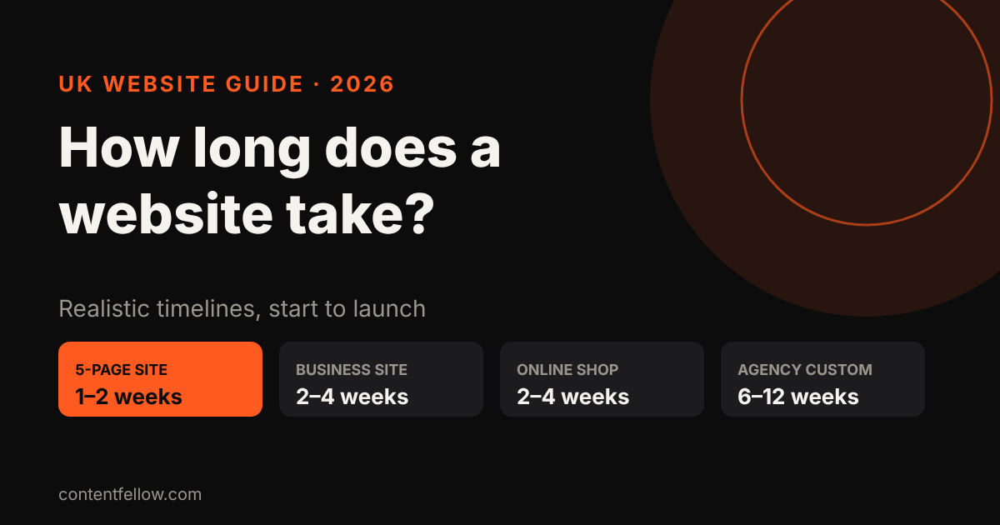
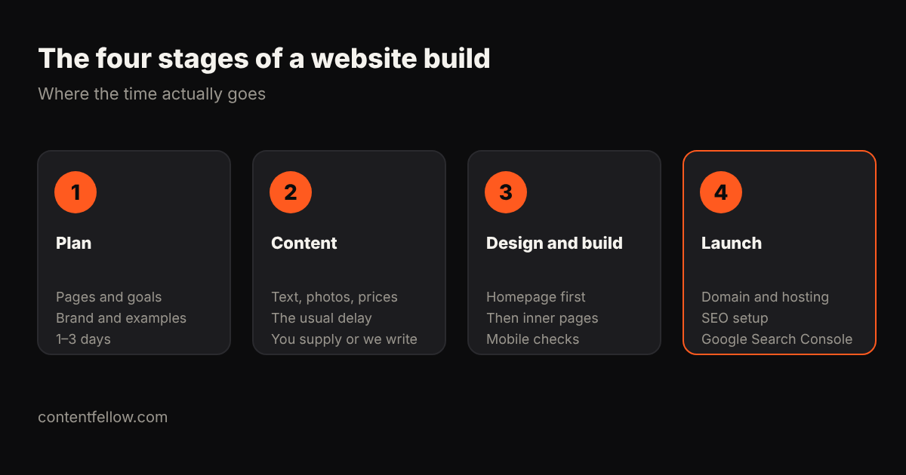

How Long Does It Take to Build a Website in the UK? (2026)
Quick answer: A simple 5-page small business website usually takes 1 to 2 weeks with a fixed-price package, a 10–15 page business site or small online shop 2 to 4 weeks, and a custom agency build 6 to 12 weeks. The biggest delay is almost always content: text, photos and prices. (UK, October 2026.)

Website build timelines by type
| Type of website | Typical timeline | ContentFellow package |
|---|---|---|
| Simple brochure site (up to 7 pages) | 1–2 weeks | Launch, £349 |
| Business site with blog and booking (up to 15 pages) | 2–4 weeks | Grow, £749 |
| Small online shop (up to 100 products) | 2–4 weeks | Shop, £1,499 |
| Custom agency build | 6–12 weeks | — |
| Web app or portal | 3–8 weeks | App Starter from £1,249 |

Where does the time go?
- Plan (1–3 days): agree the pages, the goal of the site, your brand and examples you like.
- Content (the usual delay): text, photos, prices and testimonials. If you're waiting on content, nothing else can finish.
- Design and build: homepage design first, then inner pages, then mobile and speed checks.
- Launch: domain, hosting, SEO setup and Google Search Console.
How to get your website live faster
- Have your logo, photos and prices ready before you start.
- Send two or three websites you like. It saves rounds of design changes.
- Decide quickly on feedback. Most projects stall waiting for approvals.
- Launch with the essentials, then add pages monthly on a care plan.
Fixed price, fixed timeline
Our development packages come with a fixed price and a clear timeline: Launch £349, Grow £749, Shop £1,499. Pay half to start and half at launch. See development packages · Prefer monthly? The Build Fellow at £69 a month includes a 5-page site. Compare both in subscription vs one-off build.
Frequently asked questions
How long does a small business website take to build?
A simple 5 to 7 page site usually takes 1 to 2 weeks once content is ready. Larger business sites take 2 to 4 weeks.
Why do website projects take longer than expected?
Most delays come from missing content (text, photos, prices) and slow feedback, not the build itself.
How long does an online shop take to build?
A small shop with up to 100 products usually takes 2 to 4 weeks, depending on how ready the product photos and descriptions are.
Can a website be built in a week?
Yes, a simple site can launch in about a week if the content and feedback are ready.
How long do agencies take to build a website?
Custom agency builds typically take 6 to 12 weeks, including discovery, design rounds and testing.
Timelines based on ContentFellow delivery times and typical UK agency schedules (October 2026). Last updated 17 October 2026.